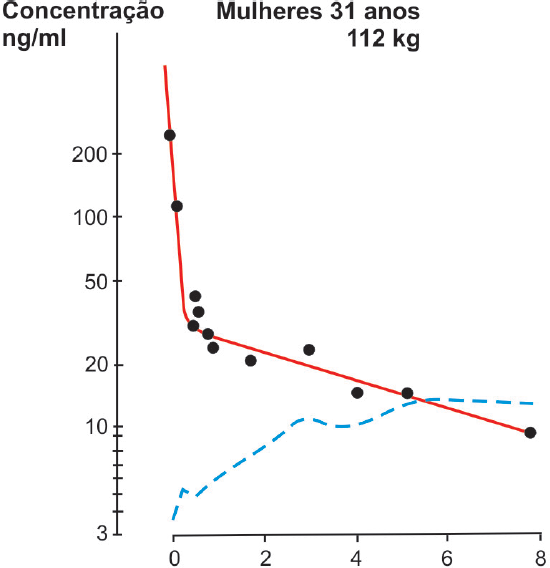

Analise as informações apresentadas no gráfico abaixo,
sobre a cinética plasmática do diazepam na mulher obesa e
na de peso normal.


Pode-se observar no gráfico que a meia-vida de eliminação do
diazepam na mulher obesa, quando comparada à meia-vida
de eliminação do mesmo medicamento na mulher de peso
normal, é cerca de
-
duas vezes menor, o que demonstra que o medicamento
tende a acumular-se mais no indivíduo com peso normal.
-
duas vezes maior, pois esse medicamento é altamente
hidrossolúvel, apresentando afinidade maior pela água,
sendo eliminado mais rápido pelos rins.
-
duas vezes maior, pois esse medicamento é altamente
lipossolúvel e tende a acumular-se no tecido adiposo,
aumentando a distribuição do medicamento e, conseqüentemente,
a meia-vida de eliminação no indivíduo obeso.
-
quatro vezes menor, pois o diazepam, por ser lipossolúvel,
demanda maior tempo de metabolização hepática.
-
quatro vezes maior, pois esse medicamento é altamente
lipossolúvel e tende a acumular-se no tecido adiposo,
aumentando a distribuição do medicamento e, conseqüentemente,
a meia-vida de eliminação no indivíduo obeso.